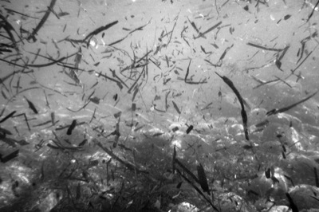

Isola del Giglio
This is my fifth summer in Italy since Simon and I moved back. Five summers, when taken in a chunk like that, is hard to believe. For every summer but one we’ve taken the train then the bus then the ferry then another bus to Campese on Isola del Giglio. It has become a tradition with us, I suppose. But every time I board the boat back and watch the island fading into the sea, I want to return; not only to continue basking in sun and sand, to swim again, or to somehow verify the subtle charm it holds. No, I just want to return, simple as that.
If my lifestyle in Italy is simpler than what it would be in the States, then life on Giglio is as simple as life can presently get. The treasure of any island is its relaxed restrictions on the demands of life. Here to there is never far and one has all day. Eat some fish. Go for a swim. Watch the sun set. Sleep. The biggest stress of the week was when we took a kayak out on a much too windy day. Our amateur rowing returned us safely enough albeit frazzled, but the way the waves rose over our wobbly boat pointed out to open sea, well, we must have been slightly crazy to concede.
The ferry from Santo Stefano arrives in Porto, unloading its cargo of cars and people then reloading in classic Italian confusion. The buildings facing the sea are brightly colored, housing restaurants and shops. Porto is the busiest of the three villages on Giglio and I imagine functions (more-or-less) year round. We stay only as long as it takes to buy a bus ticket, maybe eat a gelato, and catch the bus. The orange bus charges up the mountain on hairpin curves. First Porto shrinks then disappears, replaced by dry Mediterranean brush: wild rosemary, sage and stately umbrella pines. The bus teeters up the mountain with the sea spread below in every direction like a shimmering blanket. If it’s hot, then the sea looks delicious.

Atop the mountain balances the second village, Castello, no more than a centro storico. Not once have I experienced an urge to wander its labyrinthine streets instead of swimming; if I did I would wonder who chose to build so isolated a city, hovering on the very edge of sky, sea and land. They must of been a solitary sea-weathered bunch, some hundreds of years ago. In Castello the bus only stops to drop off and pick up, then it charges off again, to coast down the hairpin curves on the other side of the hill.
Below Campese draws into focus; the beach with its rows and rows of lettini and umbrelloni and that phallic rock, the Faraglione, jutting up out of the water at the far end of the bay. Campese is the youngest town, built along the beach on the fringe of the bay. But not built up in the American sense, for it retains an old village feel. The whole island is frequented by Italian vacationers and, especially on Campese, it’s rare to hear another European language. There is foot traffic here, hardly cars, people in flip-flops, bikinis, wraps and speedos.
The fish truck drives through in the morning announcing its fresh catches, “Gamberi, calamari, spigole, vongole…” Anything seafood simply melts in the mouth, especially when washed down with a chilled white wine from the vines of Giglio. There are hikes to take if you want to get off the beach, but I’m hardly that ambitious, yet snorkeling I can always manage. Our apartment this year was perfect, in size and in location.
What I enjoy most: the vital rejuvenation from the sea, like a tonic the salt water encompasses my body as I hang suspended among it rich molecules. Dinners, on the terrace or in a restaurant, wine bottles shared with Simon. Starry nights and sand clinging to my feet and the dark waves curling along the shore. And long luxurious mornings.
As I sit, sweating in the city, I want to return.
All images are by Simon Griffee, from The Island story made after returning from Giglio last year.
· · · · · · · · · · · · · · · · · · · ·